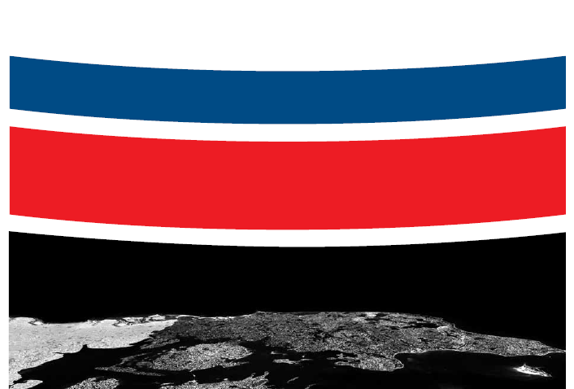
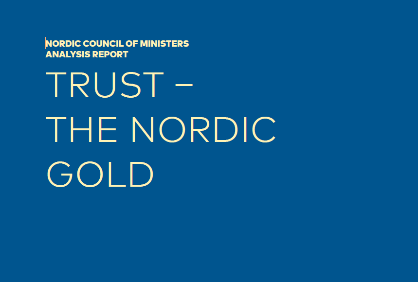
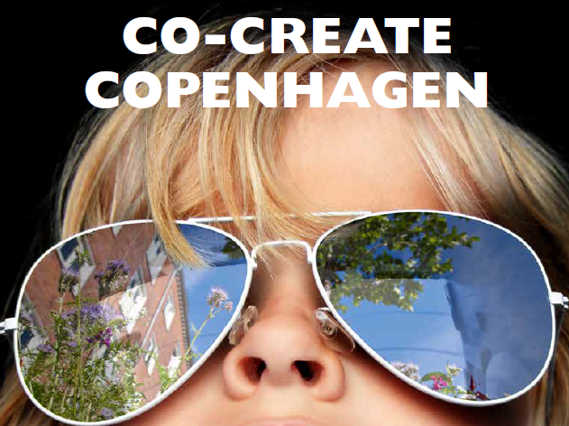

חומרים ללמידה מקדימה
מצורפים חומרים למאמרים על דנמרק, קופנהגן ומהלכים או רפורמות שנכתבו ברוח המהלכים שהתקיימו בדנמרק

Infrastructural Optimism – Linda C. Samuels
כיצד תשתיות משקפות אמון קולקטיבי ומעצבות תחושת עתיד משותף
המאמר מציע מבט חדש על תשתיות – לא כמרכיב הנדסי טכני, אלא כביטוי חברתי, תרבותי ופוליטי לאמון הציבורי. סמואלס מראה כיצד השקעה בתשתיות ציבוריות – כבישים, גשרים, תחבורה ומרחבים קהילתיים – יכולה לשמש מנוף לשיקום ולבניית אמון לאחר משברים. דרך דוגמאות כמו השיקום שלאחר הוריקן קתרינה ותכנית ה־WPA של רוזוולט, היא מציגה את הרעיון של "אופטימיות תשתיתית": ההבנה שתשתיות אינן רק אמצעי תפקודי, אלא גם ביטוי לאמונה משותפת בעתיד, לצדק חברתי וליכולת של קהילה לשוב ולבנות את עצמה.

Devolution to Cities: A Case Study of KL – Local Government Denmark
כיצד דנמרק בנתה מנגנון ביזור שלטוני המעניק עוצמה ממשית לערים ולרשויות המקומיות
המאמר מציג את הסיפור של KL – התאחדות הרשויות המקומיות של דנמרק, גוף מייצג שמאגד את כלל הרשויות ומנהל את המשא ומתן מול הממשלה. דרך מנגנוני מימון, אוטונומיה מוניציפלית והסכמות רוחביות בין מפלגות, נבנתה מערכת יציבה של ניהול עצמי מקומי המבוססת על אמון, אחריות ושיתוף פעולה בין שלטון מרכזי ומקומי.

The Local Government Reform in Brief
רפורמת 2007 ששינתה את מבנה השלטון המקומי בדנמרק
המסמך מסביר כיצד איחוד הרשויות מ־271 ל־98 ומיסוד חמשת המחוזות החדשים יצרו שלטון מקומי חזק ויעיל יותר. הרפורמה התמקדה בהגדלת האחריות המקומית, בשיפור השירותים לאזרחים ובבניית שותפות חדשה בין המדינה לרשויות.

Trust – The Nordic Gold
אמון כחומר הגלם החשוב ביותר של החברה הנורדית
הדו"ח של מועצת השרים הנורדית מתאר כיצד רמות האמון הגבוהות בין אזרח לאזרח ובין אזרח לשלטון הפכו את דנמרק ושכנותיה למודלים של שגשוג ויציבות. האמון נבנה היסטורית סביב מדינה הוגנת, מוסדות נקיים משחיתות וחברה אזרחית פעילה – והוא נחשב ל"זהב הנורדי" שמחזיק את המערכת יחד.

ביזור סמכויות – ג'וינט אלכא ומלגת בכר
בחינה של מודלים עולמיים לביזור סמכויות והשוואתם למצב בישראל
המסמך מציג את מושג הביזור בממדים פוליטיים, מנהליים ופיסקליים, תוך סקירה של המלצות OECD והתאמתן לישראל. הוא מדגיש כי ביזור אינו מטרה בפני עצמה אלא כלי לשיפור דמוקרטיה, יעילות ואחריותיות, ומציג המלצות יישומיות להעמקת האוטונומיה המוניציפלית.

ביזור סמכויות לשלטון המקומי
סטטוס עדכני של מהלך הביזור בישראל והלקחים ממדינות ה־OECD
הסקירה של מרכז המחקר והמידע של הכנסת מפרטת את המלצות ה־OECD, את החלטת ממשלה 675 מ־2021 ואת צעדי היישום בישראל. היא מתארת את ההבדלים בין העברת סמכות אמיתית להפחתת רגולציה בלבד, ומציפה את הפער בין הרצוי למצוי בדרך לביזור אפקטיבי.

דוח הצוות לקידום אזוריות בישראל (2021)
ניתוח יסודי של הפוטנציאל למבנה אזורי חדש במדינת ישראל
הדו"ח בוחן את היתרונות שבאזוריות כמענה לאתגרים הכלכליים והמנהליים של ישראל. הוא מציע מתווה לשיתופי פעולה אזוריים בין רשויות ומשרדי ממשלה, במטרה לשפר תיאום, לפתח כלכלה אזורית ולחזק את השלטון המקומי.

Copenhagen: Resilience and Liveability
כיצד קופנהגן בנתה עיר חיה, ירוקה ועמידה לשינויי אקלים
המאמר סוקר את השינוי הדרמטי שעברה העיר ממצוקה כלכלית בשנות ה־80 לעיר שנחשבת מהמאושרות בעולם. הוא מתאר את האסטרטגיה המשולבת של קיימות סביבתית, תכנון עירוני כולל ושילוב חברתי – מהאקלים ועד תחבורה, בריאות וחוסן קהילתי.

תהליך השינוי של הנמל – The Copenhagen Model
מהנמל התעשייתי לעיר חדשנית ובת־קיימא
המחקר מתאר את הסיפור של נמל קופנהגן, שעבר טרנספורמציה כלכלית ועירונית והפך למוקד חיים, מגורים ותרבות. באמצעות ניהול חכם של נכסים ציבוריים, מימון עצמי ותכנון אסטרטגי, נבנה מודל המשלב שותפות בין מדינה, עירייה ומגזר פרטי – ומשמש השראה לערים ברחבי העולם.

A Case Study of How Seven Danish Cities Conduct Area Development to Propel Urban Revival
כיצד ערים דניות מובילות התחדשות עירונית בשיתופי פעולה חוצי־מגזרים
המאמר מנתח שבע ערים בדנמרק שפיתחו מודלים שונים של פיתוח אזורי מבוסס־מקום, עם דגש על מימון חדשני, מעורבות אזרחית ותכנון מותאם הקשר. הוא ממחיש כיצד ערים בינוניות מצליחות להחיות אזורים מוזנחים באמצעות שותפות בין רשויות, מגזר עסקי וקהילות מקומיות – תוך שמירה על איזון בין צמיחה לקיימות.

Co-Create Copenhagen – Vision for 2025
חזון העיר קופנהגן לשנת 2025: עיר חיה, אחראית ובעלת ייחוד
מסמך מדיניות העירייה מגדיר שלושה יעדים מרכזיים לעתיד קופנהגן: עיר חיה (Liveable) המעודדת חיים במרחב הציבורי, עיר עם ייחוד (City with an Edge) המטפחת יצירתיות וגיוון, ו-עיר אחראית (Responsible City) שמובילה במאבק בשינויי האקלים ובכלכלה מעגלית. החזון מדגיש שיתוף תושבים – "העיר הטובה ביותר היא זו שאתה שותף ביצירתה".

הערכה של הרפורמה בשלטון מקומי – משרד הפנים דנמרק
בחינת יישום רפורמת 2007 והשלכותיה על מבנה השלטון המקומי הדני
הדו"ח, שהוכן על ידי משרד הפנים הדני, מסכם את תוצאות רפורמת השלטון המקומי שבוצעה בשנת 2007, שבה אוחדו הרשויות מ־271 ל־98 והוקמו חמישה אזורים אזוריים חדשים. ההערכה בוחנת את השפעת השינויים על איכות השירותים, יעילות הממשל המקומי ושיתוף הפעולה בין המדינה לרשויות. הממצאים מצביעים על חיזוק משמעותי של האוטונומיה המוניציפלית לצד אתגרים מתמשכים בתיאום ובחלוקת המשאבים.